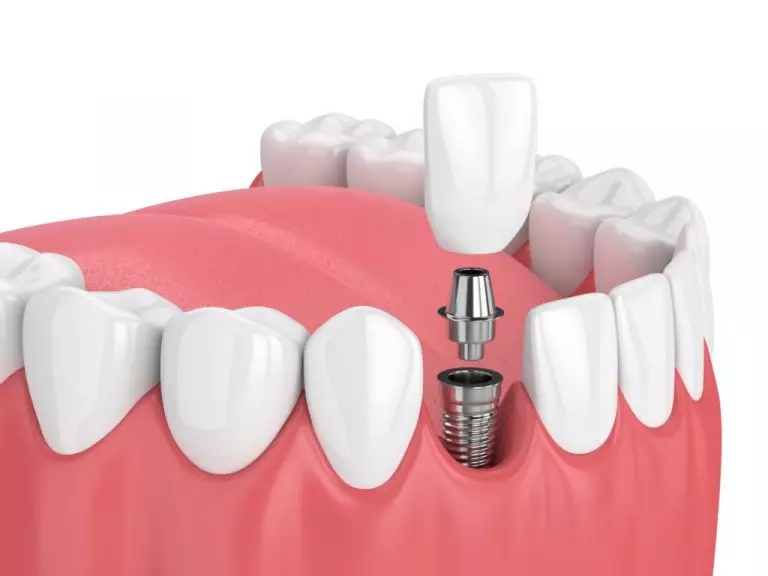

Você pode realizar seu tratamento de Canal na Odonto Gran Viana!
Tratamento de Canal
O implante dentário é um pino de titânio fixado na estrutura óssea. Ele funciona como a raiz do dente, e serve como um pilar para colocação da prótese dentária.
Ele normalmente é utilizado para substituir uma ausência dentária, causada por vários fatores como: perda óssea, cárie extensa e etc.
Os implantes dentários solucionam funções como a fala e a mastigação e atualmente são muito utilizados para melhorar a estética do sorriso e consequentemente aumentar a autoestima do paciente


Benefícios do canal dentário
- Previne a perda óssea
- Combina com seus dentes naturais
- Restaura a força de mordida
- Impede mudanças na forma do seu rosto
- Ativa a fala natural
- Fácil de cuidar
- Suporta Dentes Adjacentes
- Uma solução permanente para a perda dentária